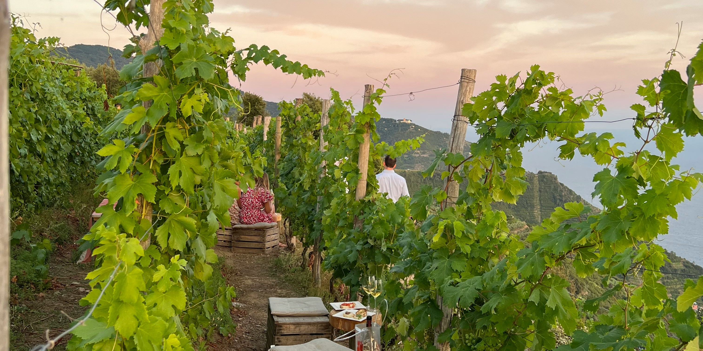

Danmarks Vinrevolution: Solaris & Sydfynsk Magi
Dansk vin har i de seneste år gennemgået en forvandling fra kuriositet til anerkendt kvalitetsprodukt. En central spiller i denne udvikling er druesorten Solaris, der trives exceptionelt godt i vores nordiske klima. Hos Havblink Hvidvin er vi stolte af at dyrke Solaris og andre egnede sorter, der, kombineret med Sydfyns unikke terroir, giver os mulighed for at skabe vine med en distinkt dansk karakter – friske, aromatiske og fulde af liv.
Solaris: Stjernen i Dansk Vinavl
Solaris er en grøn druesort, der er specielt udviklet til køligere klimaer. Den er kendt for sin robusthed over for sygdomme og sin evne til at modne tidligt, hvilket er afgørende i en kort dansk sommer. Druerne udvikler en flot sukkerbalance og bevarer en frisk syre, hvilket resulterer i vine med en bred vifte af aromaer – ofte med noter af hyldeblomst, stikkelsbær, citrus og grønne æbler.
"Solaris har været en game-changer for dansk vin. Dens tilpasningsevne og kvalitetspotentiale har åbnet døre for en ny generation af danske vinbønder."
På Havblink Vingård udgør Solaris rygraden i mange af vores hvidvine, hvor vi arbejder med forskellige kloner og vinifikationsmetoder for at udforske dens fulde potentiale.
Sydfyns Unikke Terroir: Havets Indflydelse
"Terroir" er et fransk begreb, der dækker over samspillet mellem jordbund, klima, topografi og menneskelig indflydelse – alt det, der giver en vin sin unikke karakter. Sydfyn byder på et terroir, der er særligt gunstigt for vindyrkning i Danmark:
Kystklima
Nærheden til havet sikrer et mildere klima med færre ekstreme temperaturudsving. Havbrisen bidrager til at holde druerne sunde og forlænger modningssæsonen.
Solskinstimer
Sydfyn er kendt for relativt mange solskinstimer, hvilket er essentielt for druernes sukkerudvikling og modning.
Jordbund
Jordbunden på vores marker er typisk lerholdig med indslag af sand og grus, hvilket giver god dræning og bidrager med mineralitet til vinene.
Fremtiden for Dansk Vin
Dansk vin er på en spændende opadgående kurve. Med øget viden, forbedrede dyrkningsteknikker og en ny generation af passionerede vinbønder, ser fremtiden lys ud. Forbrugerne har fået øjnene op for kvaliteten, og danske vine ses oftere på menukortene hos toprestauranter.
Hos Havblink Hvidvin er vi dedikerede til at være en del af denne positive udvikling. Vi investerer i forskning, eksperimenterer med nye metoder og arbejder tæt sammen med andre danske vinproducenter for at løfte niveauet og udbrede kendskabet til dansk vin – både nationalt og internationalt.
Oplev Resultatet i Vores Vine